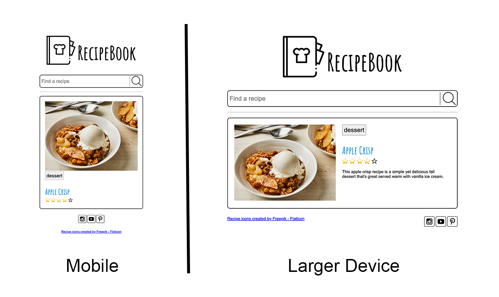

Prove - Flexbox
Recipe Book Part 2
File Management:
Create a folder called 'recipes'. Make sure you have an index.html page and a separate CSS file.
Instructions:
Use flexbox to layout the logo and title, the search area, the recipe, and the footer.
This demonstrates how it will look.
Notice how the recipe description does not show up on mobile devices.
The apple crisp image,logo, search icon, and social media icons are included in these images. Download the recipe images and add them to your project folder. You will use the rest of the recipe images in the next prove activity.
We are using some icons from a site called Flaticon. We are free to use them, but the license require some attribution in return. This site asks that we add this link. We will put it in the footer.
<a href="https://www.flaticon.com/free-icons/recipe" title="recipe icons">Recipe icons created by Freepik - Flaticon</a>
Along with the attribution for the recipe book icon, we also need some social media icons. These icons also require attribution. These icons are provided from Iconfinder through an account called AlfredoCreates. The license here is bit more flexible in how we attribute. This time we will do it in a comment.
<div class="social">
<!-- Social media icons provided under CC from https://www.iconfinder.com/AlfredoCreates -->
<a href="#"><img src="images/instagram_icon.svg" alt="instagram icon"></a>
<a href="#"><img src="images/youtube_icon.svg" alt="youtube icon"></a>
<a href="#"><img src="images/pinterest_icon.svg" alt="pinterest icon"></a>
</div>
For the ratings section we want to show filled in and empty stars. We need to make sure that this very visual rating representation is also accessible. We can use aria attributes to do this.
<span
class="rating"
role="img"
aria-label="Rating: 4 out of 5 stars"
>
<span aria-hidden="true" class="icon-star">⭐</span>
<span aria-hidden="true" class="icon-star">⭐</span>
<span aria-hidden="true" class="icon-star">⭐</span>
<span aria-hidden="true" class="icon-star-empty">⭐</span>
<span aria-hidden="true" class="icon-star-empty">☆</span>
</span>
The font used for the headlines is called Amatic SC and can be found on Google fonts.
Submit your project
Commit your changes, then push them to GitHub. Wait a few minutes then check to make sure they show on Github pages.
After verifying that your page updated, submit the URL to your page in Ilearn. The URL will look something like this:
https://githubusername.github.io/wdd131/recipes
Make sure to replace "githubusername" with your actual github username.